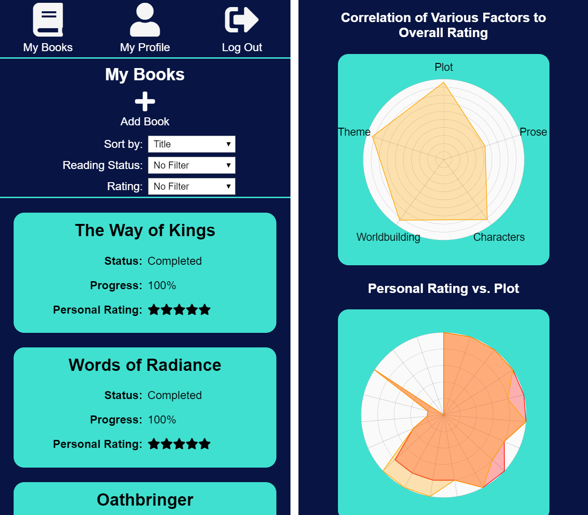
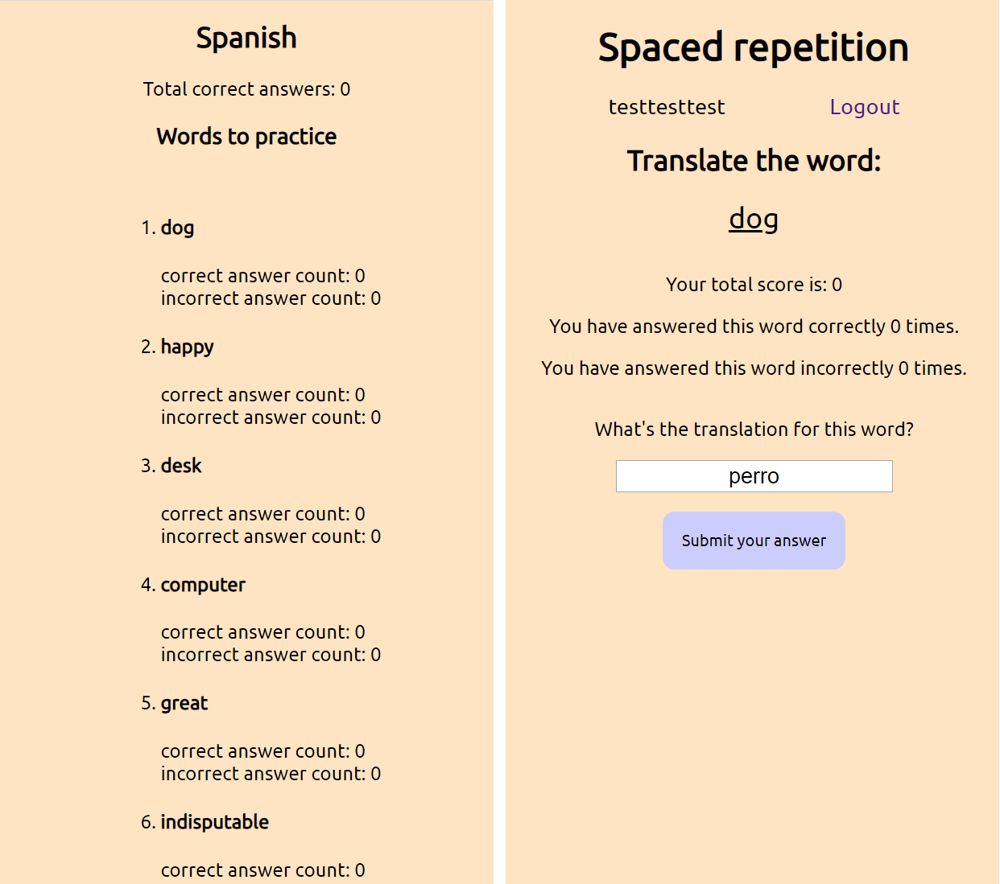
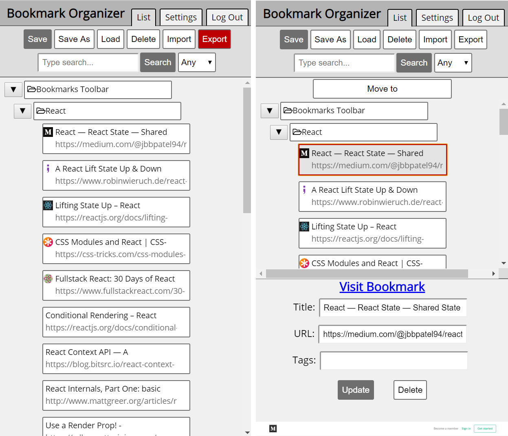

Projects
BookTracker

An app designed to track, rate, and review books that you are reading. Keep track of your progress and rate books in a more granular way than a simple star rating. Backend is an API with a database hosted by PostgreSQL, deployed on Heroku. Client is hosted on Zeit.
Spaced Repetition (12 Hour Project)

An app that uses spaced repetition to help users memorize Spanish vocabulary words. Project was completed in ~12 hours over the course of two days with Jonny Deates. Currently has a limited wordbank.
Bookmark Organizer

Reorganize, edit, sort, filter, and tag your bookmarks. Compatible with desktop and mobile. Backend is a PostgreSQL database deployed through Heroku, frontend is deployed through Zeit.